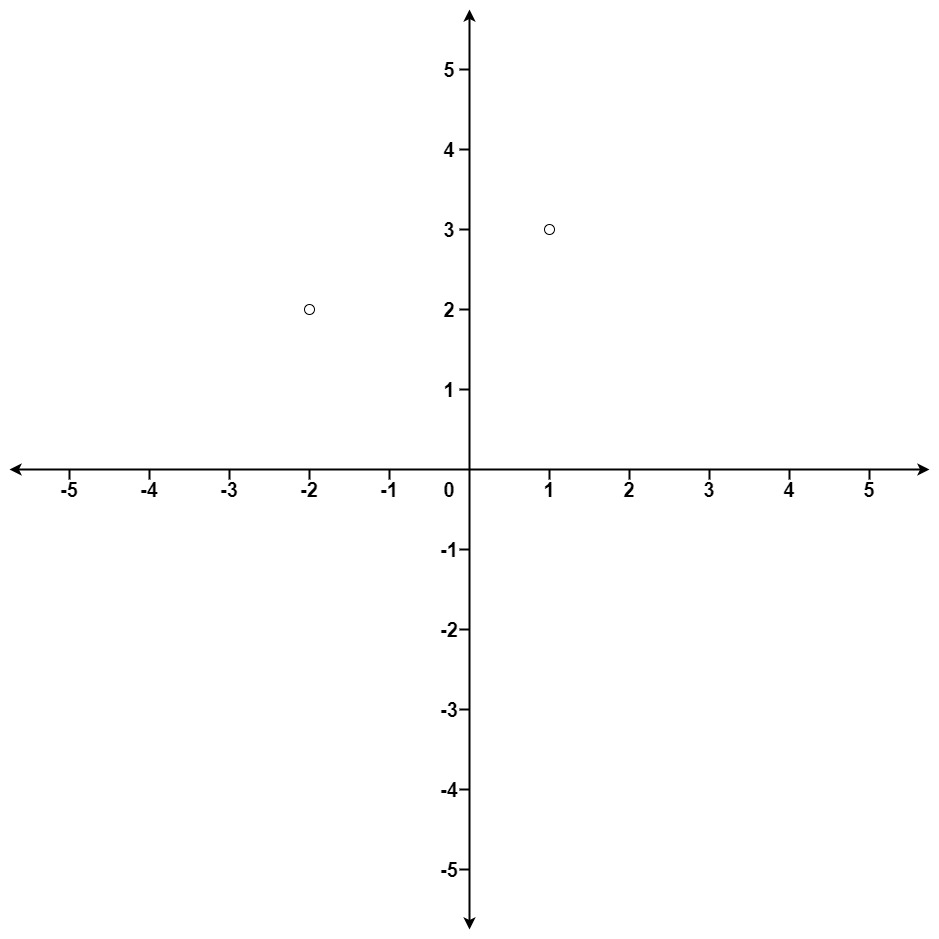

| Category | Difficulty | Likes | Dislikes |
|---|---|---|---|
| Algorithms | Medium | 8953 | 335 |
array | math | divide-and-conquer | geometry | sorting | heap-priority-queue | quickselect
facebook | asana | amazon | google | linkedin | apple | microsoft | oracle | salesforce | wix
Given an array of points where points[i] = [xi, yi] represents a point on the X-Y plane and an integer k, return the k closest points to the origin (0, 0).
The distance between two points on the X-Y plane is the Euclidean distance (i.e., √(x1 - x2)2 + (y1 - y2)2).
You may return the answer in any order. The answer is guaranteed to be unique (except for the order that it is in).
Example 1:

Input: points = [[1,3],[-2,2]], k = 1
Output: [[-2,2]]
Explanation:
The distance between (1, 3) and the origin is sqrt(10).
The distance between (-2, 2) and the origin is sqrt(8).
Since sqrt(8) < sqrt(10), (-2, 2) is closer to the origin.
We only want the closest k = 1 points from the origin, so the answer is just [[-2,2]].Example 2:
Input: points = [[3,3],[5,-1],[-2,4]], k = 2
Output: [[3,3],[-2,4]]
Explanation: The answer [[-2,4],[3,3]] would also be accepted.
Constraints:
1 <= k <= points.length <= 104-104 <= xi, yi <= 104